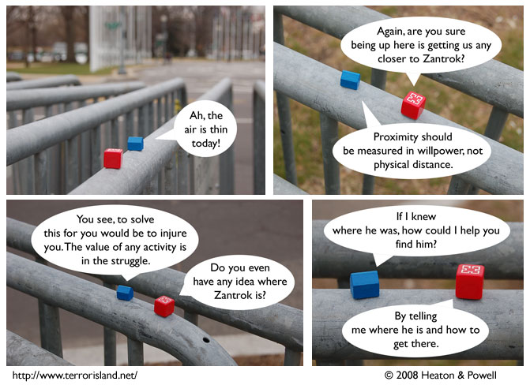

Strip #275
— Friday, March 14, 2008
Helmut’s standard unit of proximity is the voliton.
Notes, Thoughts, &c.
Ben’s Notes
Getting the message “Sonic The Hedgehog, the world’s fastest hedgehog, has joined the brawl!” in Super Smash Brothers Brawl today made me realize that a hedgehog was an odd animal choice for Sonic. Why did I not see that before?
Lewis’s Notes
Many people have asked me whether Helmut’s wisdom is real or illusory. The correct answer is that it is both.